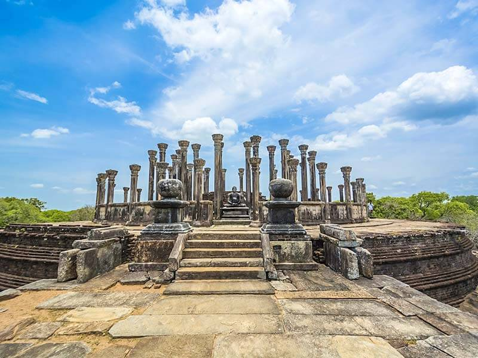

Description: The image shows an ancient circular stone structure surrounded by tall, evenly spaced stone pillars, set in an open natural landscape. At the center of the structure is a seated Buddha statue placed on a raised stone platform, reached by a short flight of steps. The stone floor and terraces are carefully arranged in concentric layers, highlighting the symmetry and precision of the design. The pillars, though weathered by time, still stand firmly, giving a strong sense of historical depth. Above, a bright blue sky with scattered white clouds contrasts beautifully with the aged stone, creating a calm and majestic atmosphere that reflects the spiritual and architectural significance of the site..
History: Medirigiriya Vatadage is a remarkable example of early Sri Lankan stone architecture, believed to date back to the Anuradhapura period (around the 7th–9th century). The structure is circular in design and is famous for its concentric rows of stone pillars, which once supported a wooden roof. At the center is a seated Buddha statue, symbolizing serenity and spiritual focus. The Vatadage was mainly used for Buddhist worship and meditation, and it reflects the advanced engineering skills, religious devotion, and artistic excellence of ancient Sri Lankan civilization. Today, it stands as an important archaeological and cultural heritage site, attracting both pilgrims and tourists from around the world..